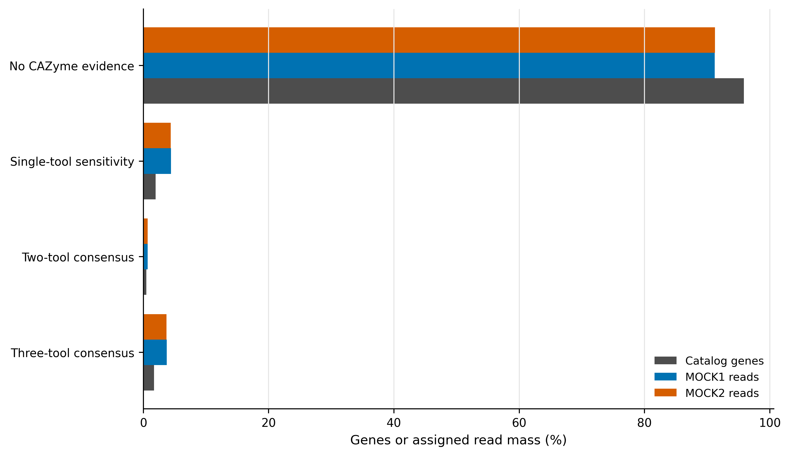
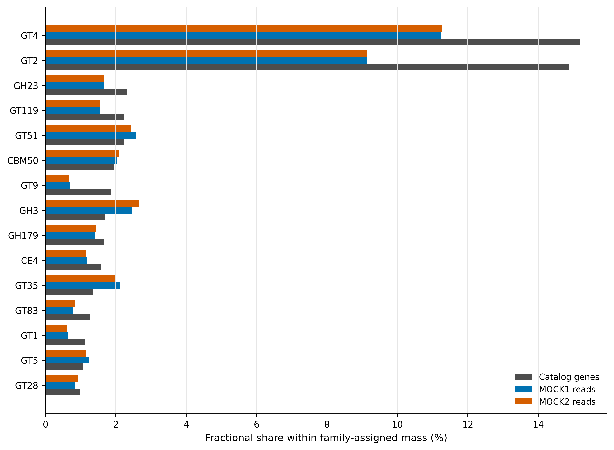
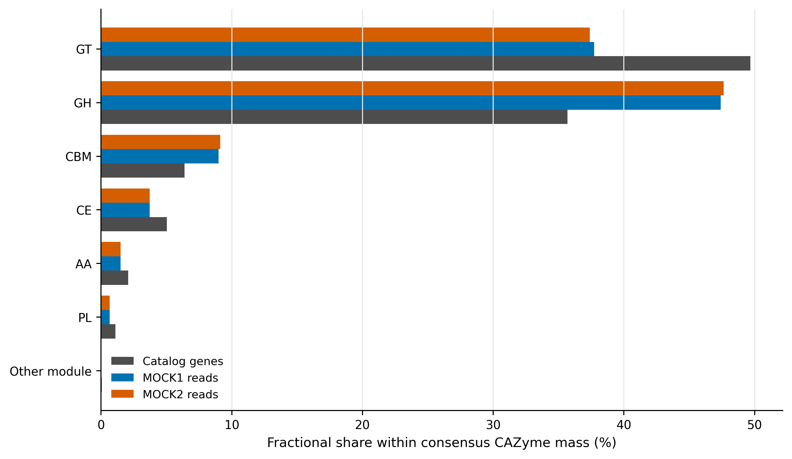
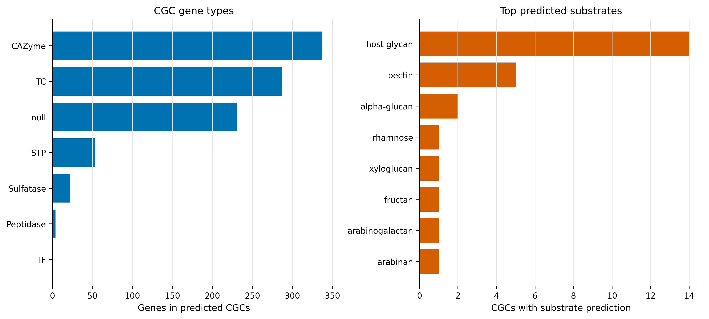

options(timeout = 600)
base_url <- "https://raw.githubusercontent.com/petemeng/metagenomics-best-practices/e219a2cd01609cc208a89e291cbd363ed7f2fbd8/"
files <- read.delim(paste0(base_url, "examples/37/files.tsv"))
for (i in seq_len(nrow(files))) {
path <- files$path[i]
dir.create(dirname(path), recursive = TRUE, showWarnings = FALSE)
if (!file.exists(path)) {
download.file(paste0(base_url, files$source[i]), path, mode = "wb")
}
}CAZymes 碳水活性酶：dbCAN 共识、底物与 CGC
学习目标：用 dbCAN 的三条证据链注释 carbohydrate-active enzymes（CAZymes，碳水化合物活性酶）；把 family、class、substrate 与 carbohydrate gene cluster（CGC，碳水化合物基因簇）分层报告；把一个基因的多标签按比例分配；理解“预测底物”与“实测降解活性”之间的边界。
真实数据：主输入是 Article 34 生成的 93,782 条非冗余代表蛋白，MOCK1/MOCK2 的 read weights 来自 Article 35 的 2,784,234/2,777,443 条 assigned reads。CGC 正控为 Bacteroides thetaiotaomicron VPI-5482（GCA_000011065.1，6,293,399 bp）。
结论边界：CAZy family 是序列家族标签；dbCAN-sub 和 CGC/PUL 给出的是底物候选。它们不证明样本在研究条件下表达了该酶、真正降解了该底物，也不提供代谢通量。
提示先确定这一点
先区分家族级命中和更具体的功能推断；工具一致性与背景信息提供支持，但不等于底物已被实验证实。
同一个 CAZyme，为什么几个工具不完全一致？
锚定 dbCAN3 的 Fig. 1：它把 CAZyme family annotation、CGC detection 和 substrate prediction 画成三层流程，并区分 family-to-substrate 与 CGC-to-PUL 两条底物证据 (Zheng 等 2023年)。dbCAN2 则明确提出组合 HMMER、DIAMOND 与 Hotpep/短保守肽证据，以减少单一检索器的偏差 (Zhang 等 2018年)。
本文把这一框架落到一个真实 gene catalog：先画三工具证据分层，再画 CAZy class/family 的 gene-weight 与 read-weight 组成，最后用完整参考基因组检验 CGC 和底物输出。CAZy 本身是持续维护的 family classification resource，不是活性实验数据库 (Lombard 等 2014年)。

重要先给结论：单工具命中不能并入主结果
93,782 条 proteins 中，3,899 条至少被一种方法命中；其中 1,605 条得到三工具共识，445 条得到两工具共识，合计 2,050 条构成主 CAZyme 集。其余 1,849 条只有单工具证据。若把后者直接并入，主结果会从 2,050 条膨胀到 3,899 条，且方法特异性错误无法被共识门禁约束。
下载本例数据与分析代码
数据与代码清单列出了本例的输入表、分析脚本和环境文件（约 1.3 MiB）。本清单不含原始 FASTQ 或大型数据库；是否需要它们取决于下文的分析起点。清单中的已计算结果仅供核对；读取结果表不等于重新运行统计模型或上游工具。
在新建文件夹中运行下面的 R 代码，下载完成后即可按正文中的相对路径读取文件。需要核验文件版本时，可使用带完整性检查的下载脚本。
先锁定输入、版本和算力边界
算力门槛
| 项目 | 本次实跑 | 队列级建议 |
|---|---|---|
| CPU | 32 cores | 16–64 cores |
| RAM | catalog peak 5.52 GiB；CGC control 2.98 GiB | 预留 16–32 GB；大批量 CGC 建议 64 GB |
| 磁盘 | database 7.4 GB；临时输出约 1 GB | 至少 30 GB；每个数据库版本独立目录 |
| 耗时 | catalog 20:36；control 7:41 | 随 protein 数、contig 数与存储速度变化 |
没有服务器时，可先读取 data/small/37-cazymes-dbcan-frozen/ 的完整 93,782-gene ledger、class/family/substrate summaries、CGC 正控表和资源日志；若要重算，只对少量 proteins 做格式检查，不能据此估计全 catalog 的命中率。
环境配置与完整运行说明
mamba create -n metagenome-cazyme-2026.07 \
--file env/cazyme-linux-64.lock
CAZY_ENV="$HOME/miniconda3/envs/metagenome-cazyme-2026.07"
env PATH="${CAZY_ENV}/bin:/usr/bin:/bin" run_dbcan --help数据库固定为 db_v5-2-9_5-5-2026。下载 data/small/37-dbcan-database-manifest.tsv 中每个 immutable URL 后，必须逐一核对 bytes 与 SHA-256；13 个 assets 合计约 7.4 GB。dbCAN_sub.hmm 需建立兼容名称 dbCAN-sub.hmm，二者必须指向同一内容。
install.packages(c("ggplot2", "dplyr", "readr", "tidyr", "forcats", "scales", "patchwork"))
library(ggplot2); library(dplyr); library(readr); library(tidyr); library(forcats)
set.seed(20260737)
pal_pub <- c(
`Catalog genes` = "#4D4D4D", `MOCK1 reads` = "#0072B2", `MOCK2 reads` = "#D55E00",
`No CAZyme evidence` = "#BDBDBD", `Single-tool sensitivity` = "#E69F00",
`Two-tool consensus` = "#56B4E9", `Three-tool consensus` = "#009E73"
)
scale_color_pub <- function(...) scale_color_manual(values = pal_pub, ...)
scale_fill_pub <- function(...) scale_fill_manual(values = pal_pub, ...)
theme_pub <- function(base_size = 12) {
theme_bw(base_size = base_size) + theme(
panel.grid.minor = element_blank(), panel.grid.major.y = element_blank(),
axis.text = element_text(color = "black"), legend.key = element_blank(),
strip.background = element_rect(fill = "#EEF3F5", color = NA), plot.title.position = "plot"
)
}
save_pub <- function(plot, file_base, width = 180, height = 120, units = "mm", dpi = 350) {
dir.create(dirname(file_base), recursive = TRUE, showWarnings = FALSE)
ggsave(paste0(file_base, ".pdf"), plot, width = width, height = height, units = units, device = cairo_pdf)
ggsave(paste0(file_base, ".png"), plot, width = width, height = height, units = units, dpi = dpi, bg = "white")
ggsave(paste0(file_base, ".tiff"), plot, width = width, height = height, units = units, dpi = dpi, compression = "lzw", bg = "white")
invisible(plot)
}输入身份
| Asset | Identity gate | Role |
|---|---|---|
| Article 34 catalog FAA | 93,782 unique proteins；SHA-256 3db88f…a3569 |
CAZyme queries |
| Article 34 metadata | 93,782 rows；SHA-256 677479…c09 |
length/completeness |
| Article 35 abundance | 187,564 rows；SHA-256 8dc7ea…36b |
MOCK1/MOCK2 read weights |
| B. thetaiotaomicron VPI-5482 | GCA_000011065.1；6,293,399 bp | CGC/substrate control |
准备并核对输入
三个检索器并不重复
| Evidence | 比较对象 | 擅长回答 | 主要风险 |
|---|---|---|---|
| DIAMOND against CAZy | query protein vs reference proteins | 是否接近已有 CAZy sequence | 近邻同源不保证相同底物；数据库偏倚 |
| dbCAN family HMM | query protein vs family profile | 是否保留 family-level domain pattern | partial ORF、domain boundary 与阈值影响命中 |
| dbCAN-sub HMM | query protein vs subfamily profile | 是否落入更细 subfamily、是否有底物线索 | subfamily-to-substrate 仍是转移预测 |
主门禁为：
\[ I_g^{primary}=I\left(\sum_{m\in\{D,H,S\}} I_{gm}\ge 2\right), \]
其中 \(D,H,S\) 分别表示 DIAMOND、dbCAN HMM 和 dbCAN-sub。这个规则提高 specificity，但不是“真值”；因此同时保留单工具 sensitivity ledger。
ROOT="$PWD"
WORK="work/article37"
DB_ROOT="/absolute/path/dbcan-v5-2-9-20260505"
CAZY_ENV="$HOME/miniconda3/envs/metagenome-cazyme-2026.07"
python3 scripts/prepare_article37_cazymes.py \
--project-root "${ROOT}" \
--work-dir "${WORK}" \
--database-dir "${DB_ROOT}" \
--env-prefix "${CAZY_ENV}"准备器对 catalog、metadata、abundance、正控和全部数据库 assets 逐项 fail closed；任何一个 ID set、bytes 或 SHA-256 不一致都会终止。
从“有命中”升级为证据矩阵
3,899 条 candidate genes 不能直接当成 3,899 条同等可信 CAZymes。主结果只保留 2,050 条两工具以上共识，并报告 1,849 条单工具敏感性。单工具层可用于候选发现，但不能与主层合并后继续计算同一个百分比。
从“family abundance”升级为守恒汇总
主集合中 GT 的 fractional gene equivalents 为 1,018.17，GH 为 731.67；GT4 与 GT2 是 gene-weight 最大的 families。这里的非整数来自多标签按 \(1/m\) 分配，不是半条基因。完整复制多标签会让分子与分母同时失去明确含义。

运行三工具注释与 CGC 正控
python3 scripts/run_article37_cazymes.py \
--work-dir "${WORK}" \
--database-dir "${DB_ROOT}" \
--env-prefix "${CAZY_ENV}" \
--threads 32等价的主 catalog 命令核心参数为：
run_dbcan CAZyme_annotation \
--mode protein \
--input_raw_data "${WORK}/inputs/catalog.faa" \
--output_dir "${WORK}/catalog" \
--db_dir "${DB_ROOT}" \
--methods diamond,hmm,dbCANsub \
--e_value_threshold 1e-102 \
--e_value_threshold_dbcan 1e-15 \
--coverage_threshold_dbcan 0.35 \
--e_value_threshold_dbsub 1e-15 \
--coverage_threshold_dbsub 0.35 \
--threads 321e-102 是 DIAMOND 的严格主门槛；HMM 与 dbCAN-sub 固定 i-Evalue <=1e-15 和 HMM coverage >=0.35。阈值与数据库 release 必须一起写进 Methods。
补回无命中 genes 并按比例分配多标签
python3 scripts/summarize_article37_cazymes.py \
--project-root "${ROOT}" \
--work-dir "${WORK}"
gzip -cd "${WORK}/summary/cazyme-gene-calls.tsv.gz" | sed -n '1,6p'GeneID Completeness EvidenceTools EvidenceTier RecommendedFamilies CAZyClasses PrimaryCAZyme
megahit-co__c000001_1 Partial 0 No CAZyme evidence - - no
megahit-co__c000002_1 Incomplete 3 Primary consensus GH38 GH yes
megahit-co__c000003_1 Partial 0 No CAZyme evidence - - no完整表保留 93,782 行；PrimaryCAZyme=yes 只由 EvidenceTools >= 2 决定。MOCK1/MOCK2 raw counts 在同一行，避免作图时换错 gene universe。
注意审稿人最常追问的六件事
- 只写“dbCAN annotated”，没有写三个 methods、阈值和数据库 release。
- 把单工具命中与两工具共识混在一个主结果里。
- 删除无命中 genes 后再计算 CAZyme 百分比，悄悄更换分母。
- 一个多结构域 protein 被完整复制到多个 class/family，导致总量膨胀。
- 把 dbCAN-sub/CGC substrate prediction 写成实测降解能力或通量。
- 在短 contigs 上把邻近 genes 当作同一完整 PUL，却没有报告 contig-edge truncation。
读取保存表并复核组成
CAZy class 与 family 粒度不同
六个常见 class 为 glycoside hydrolases（GH）、glycosyltransferases（GT）、polysaccharide lyases（PL）、carbohydrate esterases（CE）、auxiliary activities（AA）与 carbohydrate-binding modules（CBM）。GT4、GH23 等才是 family。CBM 常与 catalytic domain 共存；同一 protein 可能贡献多个 labels。
若 gene \(g\) 有 \(m_g\) 个 labels，组成图采用：
\[ w_{gk}=\frac{1}{m_g},\qquad \sum_{k\in L_g}w_{gk}=1. \]
这样 2,050 条主 CAZyme genes 在 class 层的 fractional gene equivalents 仍精确和为 2,050；GenesWithLabel 另行保留，用于描述 overlap。

底物预测分两条证据链
- Subfamily transfer：dbCAN-sub 根据亚家族与已知底物映射给出 protein-level candidate substrate。
- Genomic context：CGC-Finder 将相邻 CAZyme、transporter（TC）、transcription factor（TF）、signal transduction protein（STP）等组成 CGC，再与实验表征 PUL 或 subfamily evidence 比较。
protein-level substrate 不应自动升级为整个物种的利用能力；CGC 命中也不应自动升级为样本中的表达或通量。
frozen <- "data/small/37-cazymes-dbcan-frozen"
evidence <- read_tsv(file.path(frozen, "evidence-tier-summary.tsv"), show_col_types = FALSE)
classes <- read_tsv(file.path(frozen, "cazyme-class-summary.tsv"), show_col_types = FALSE)
families <- read_tsv(file.path(frozen, "cazyme-family-summary.tsv"), show_col_types = FALSE)
substrates <- read_tsv(file.path(frozen, "substrate-summary.tsv"), show_col_types = FALSE)
stopifnot(sum(evidence$Genes) == 93782)
stopifnot(abs(sum(classes$FractionalGeneEquivalent) - 2050) < 1e-6)
plot_data <- evidence |>
select(EvidenceTier, GenePercent, MOCK1ReadPercent, MOCK2ReadPercent) |>
pivot_longer(-EvidenceTier, names_to = "Weight", values_to = "Percent") |>
mutate(Weight = recode(Weight,
GenePercent = "Catalog genes", MOCK1ReadPercent = "MOCK1 reads", MOCK2ReadPercent = "MOCK2 reads"))
p_consensus <- ggplot(plot_data, aes(Percent, fct_rev(EvidenceTier), color = Weight)) +
geom_point(size = 2.8, position = position_dodge(width = 0.55)) +
scale_color_pub() + labs(x = "Genes or assigned read mass (%)", y = NULL, color = NULL) + theme_pub()
save_pub(p_consensus, "figures/37-tool-consensus")保存与结果核对
Gene-weight 与 read-weight 不能混称丰度
对 CAZy class \(k\)，gene-weight 为 \(\sum_g w_{gk}\)；样本 \(s\) 的 read-weight 为 \(\sum_g c_{gs}w_{gk}\)。后者的分母是 Article 35 已分配到 catalog 的 reads，不含未比对 reads，也没有经过 spike-in 或细胞数校准。
python3 scripts/freeze_article37_cazymes.py \
--project-root "${ROOT}" --work-dir "${WORK}" \
--output-dir data/small/37-cazymes-dbcan-frozen
python3 scripts/validate_article37_cazymes.py \
--project-root "${ROOT}" \
--frozen-dir data/small/37-cazymes-dbcan-frozen \
--output-dir results/37-cazymes-dbcan \
--figure-dir figures \
--chapter chapters/37-cazymes-dbcan.qmd从“预测底物”升级为可验证假设
730 条主 CAZyme genes 获得至少一个 substrate candidate；alpha-glucan、host glycan、chitin 与 peptidoglycan 位居前列。B. thetaiotaomicron 正控识别出 117 个 CGCs，其中 25 个有底物预测，包含 337 个 CAZymes、287 个 transporters 与 53 个 STPs。下一步应以培养底物、转录/蛋白表达、代谢终产物或基因敲除验证，而不是在结果段写“样本降解了某底物”。

保留 CAZyme 注释方法与结论层级
Methods template
Protein sequences from the non-redundant gene catalogue were annotated with dbCAN v5.2.9 using the dbCAN release
db_v5-2-9_5-5-2026. DIAMOND, dbCAN family HMM and dbCAN-sub searches were run with 32 threads. The DIAMOND E-value threshold was \(10^{-102}\); family and subfamily HMM hits required an i-E-value of \(10^{-15}\) and HMM coverage of 0.35. A protein was included in the primary CAZyme set when supported by at least two of the three methods; single-method hits were retained as a sensitivity set. Multi-label class, family and substrate summaries used fractional allocation (\(1/m\) per label). Read-weighted summaries used the audited raw read assignments from the same catalogue. CGCs and substrate candidates were evaluated on Bacteroides thetaiotaomicron VPI-5482 as a positive control. All random-state interfaces were fixed with seed 20260737.
结果段可接：
Of 93,782 catalogue proteins, 2,050 met the two-method consensus criterion, including 1,605 supported by all three methods. An additional 1,849 proteins were retained only in the single-method sensitivity set. Substrate labels were interpreted as computational hypotheses rather than evidence of in situ activity.
换到自己的研究中，先检查哪些条件？
你需要：预测蛋白 FASTA、每条 protein 的稳定 ID、与这些 IDs 完全一致的 abundance matrix；若做 CGC，还需要尽可能长的 contigs 或 MAGs。执行顺序是：
- 锁定 dbCAN 与 database release，并保存全部 assets 的 SHA-256。
- 对 protein catalog 运行三工具分支，预先写明两工具共识为主结果。
- 将
overview.tsv左连接回完整 catalog，不删除零命中。 - 多标签使用 fractional allocation，同时保留
GenesWithLabel。 - CGC 结果标注 contig-edge、contig length 和宿主/MAG 归属；短 contig 上的 cluster 只称 candidate。
- 以培养、转录组、蛋白组、代谢组或遗传实验验证关键底物假设。
图中应该保留哪些信息？
- 主图把“无证据、单工具、两工具、三工具”完整画出，零命中不能从分母消失。
- class 与 family 分开作图；family 名使用
GH23、GT4等英文短标签。 - 同时呈现 gene-weight 和 read-weight 时明确单位；不要把 read counts 标成 activity。
- 底物名称和图例全部使用英文；PDF 用于排版，PNG 用于网页，TIFF 使用 350 dpi LZW。
回到最初的问题
CAZyme 不是一个 DIAMOND 命中。本文以 dbCAN 5.2.9 的 DIAMOND、family HMM 与 dbCAN-sub 三证据实跑 93,782 条真实蛋白，并把 family、class、底物和 CGC 分成不同可信度层级。
参考文献
- CAZy database (Lombard 等 2014年)
- dbCAN2 multi-tool annotation (Zhang 等 2018年)
- dbCAN3 substrate and CGC framework (Zheng 等 2023年)